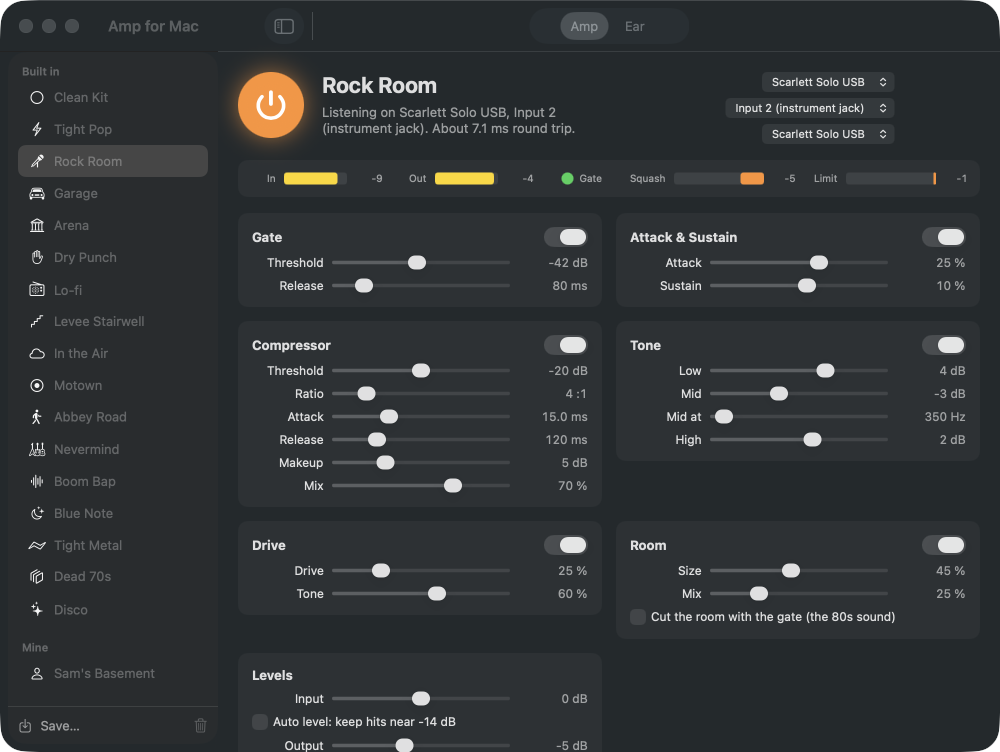
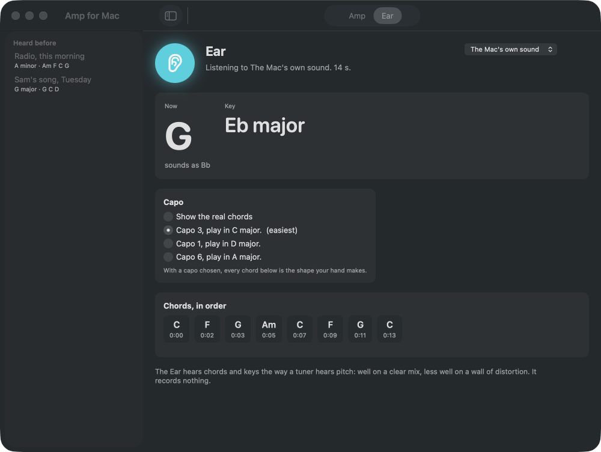

Your kit through a drum amp.
On this Mac.
Plug the interface in, press the button, play. Gate, punch, squash, tone, drive and a room, in real time, with thirty-nine drum sounds in twelve genres. And an Ear, powered by chordmap, that hears the key, the tempo and the chords of whatever the Mac is playing and says where the capo goes.
Download for macOS Free. Open source. macOS 14 or later. Nothing recorded, nothing leaves the Mac.

What it does
A real drum chain
In order: a gate with hold, an attack and sustain shaper, a compressor with a mix knob for the parallel trick, three-band tone, drive, a stereo room that can cut with the gate, and a limiter. Every knob glides, so presets switch while you play.Sounds by genre
Rock, Pop, Hip Hop, Jazz, Metal, Soul, Country, Punk, Blues, Reggae, Electronic and Studio: Seattle '91, Gated '81, Detroit '65, Boom Bap, Brushes, Doom, One Drop, thirty-nine in all, every one at the same loudness. Save your own next to them.It tells you where the knob goes
A level guide reads the raw input and says whether to turn the interface's gain up or down. Switch auto level on and it trims the rest. Every preset lands at the same loudness.The Ear
Play a song on the Mac. chordmap names the chords bar by bar, the key, the tempo and the sections, and picks the capo so the open shapes play it. Every listen is kept, with its chart and chord sheet, to come back to.
Honest limits
It is a standalone amp, not a plugin, so it will not load in Logic. The delay is your interface's, a few milliseconds. Turn direct monitor off or you hear the kit twice. The Ear hears a clear mix well and a wall of distortion less well, and it does not know the song's name. macOS asks once for the microphone (that is how it describes an interface input) and once for system audio if you use the Ear on the Mac's own sound; the app records nothing with either.
Also a command line: ampmac render kit.wav out.wav --preset "Rock Room" and ampmac chords song.wav. MIT licensed. One of the free Mac apps at keithadler.github.io.